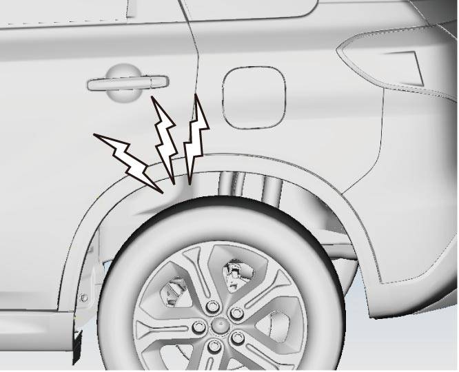
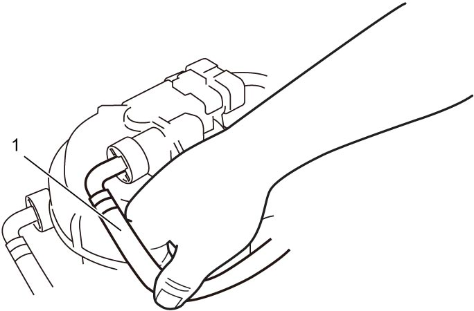

1G
| Fuel Pump On-Vehicle Inspection |
1)Set ignition “ON” and check that fuel pump operation sound is heard from the side of rear fender for about 20 seconds. Reinstall fuel filler cap after this checking. If the sound is not heard, go to Low-Pressure Fuel Supply Circuit Check:D16AA.


 "Expand image")
2)Check that fuel pressure is felt at fuel feed hose (1) for about 20 seconds after setting ignition “ON”.
If the pressure is not felt, check fuel line for fuel leakage and clogging.
If the pressure is not felt, check fuel line for fuel leakage and clogging.

 "Expand image")